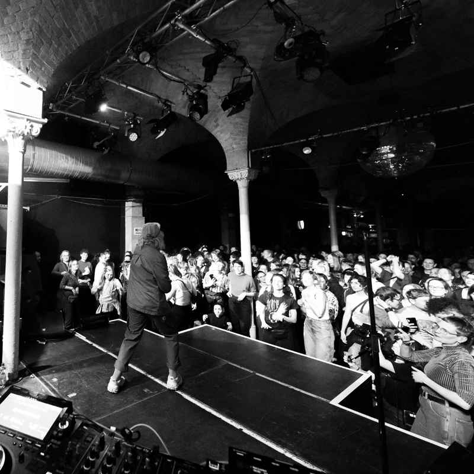
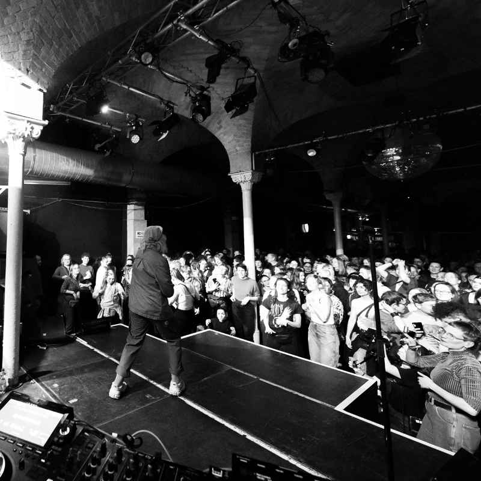

labreylien is a British multi-instrumentalist, performer and musician based in Berlin. With diverse sonic influences, labreylien creates a unique blend of alt pop, rap and post-punk. labreylien's first EP release "The Internet Is a Trash Can" is a blunt and unforgiving observation on the monotony of internet culture.
Aside from her work as a solo artist, labreylien has played hundreds of shows across multiple countries as a drummer, sharing the stage with artists including Beatsteaks, Die Toten Hosen, The Fall, Faith no More, Peter Hook (Joy Division), The Ruts DC, Foals, The Buzzcocks, and many more.
- - - - - - - - - - - - - - - - - - - - - - - - - - - - - - - - - - - - - - - - - - - - - - - -
 

- - - - - - - - - - - - - - - - - - - - - - - - - - - - - - - - - - - - - - - - - - - - - - - -
- - - - - - - - - - - - - - - - - - - - - - - - - - - - - - - - - - - - - - - - - - - - - - - -
The Internet Is A Trash Can
April 2023
7 track EP
[solo]
T I M E Z O N E
March 2024
Single
[solo]
Imitate Your Idols
April 2024
4 track EP
[Das Kate Schellenbach Experiment x labreylien]
Move On
June 2022
Single
[Das Kate Schellenbach Experiment x labreylien]
- - - - - - - - - - - - - - - - - - - - - - - - - - - - - - - - - - - - - - - - - - - - - - - -
rbb24, Pralinen festival performance review
Read article here >
RadioEINS interview with Silke Super
Listen to radio show here >
ZDF aspekte, 'Pop und Profit'
Watch full documentary here >
- - - - - - - - - - - - - - - - - - - - - - - - - - - - - - - - - - - - - - - - - - - - - - - -
ü§ô +49 17620906898
✉️ mail@labreylien.wtf
üìç Berlin Kreuzberg, 10999
üìÅ
- - - - - - - - - - - - - - - - - - - - - - - - - - - - - - - - - - - - - - - - - - - - - - - -